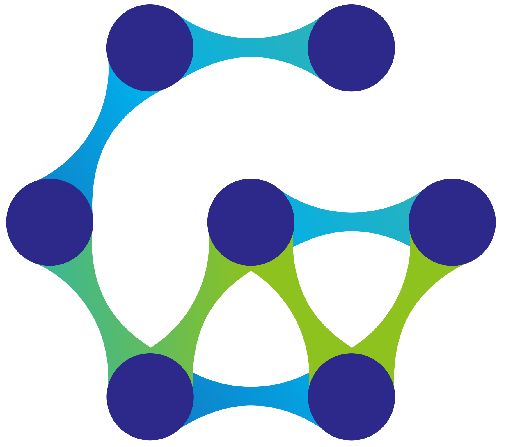
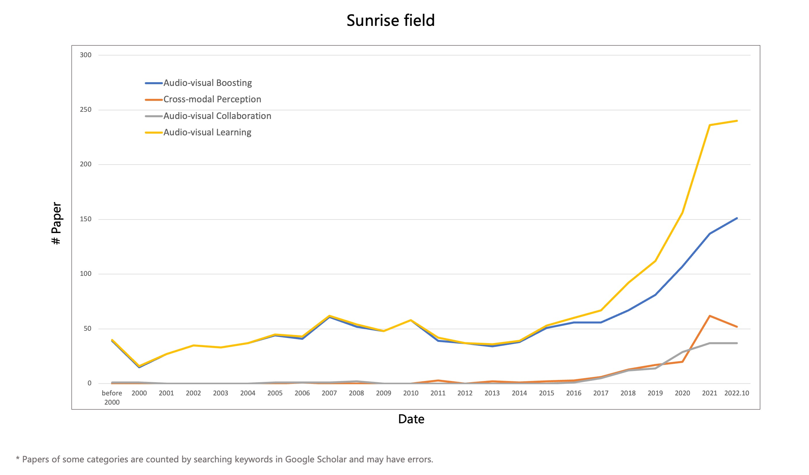

Homepage
Full Survey
Content
Audio-visual Boosting
Cross-modal Perception
Audio-visual Collaboration
Awesome List
Learning in Audio-visual Context:
A Review, Analysis, and New Perspective

If you have any suggestions or questions, please contact
yakewei@ruc.edu.cn
.